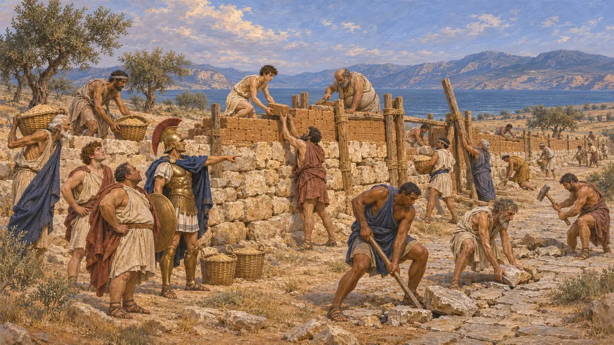
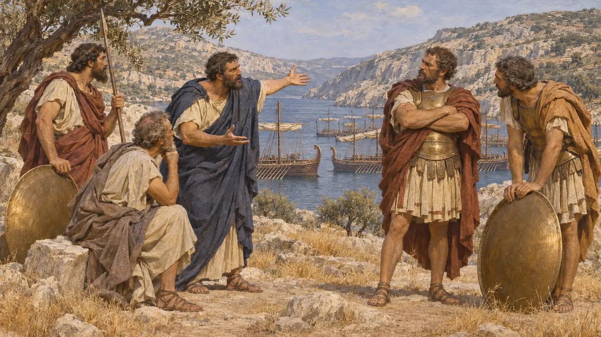
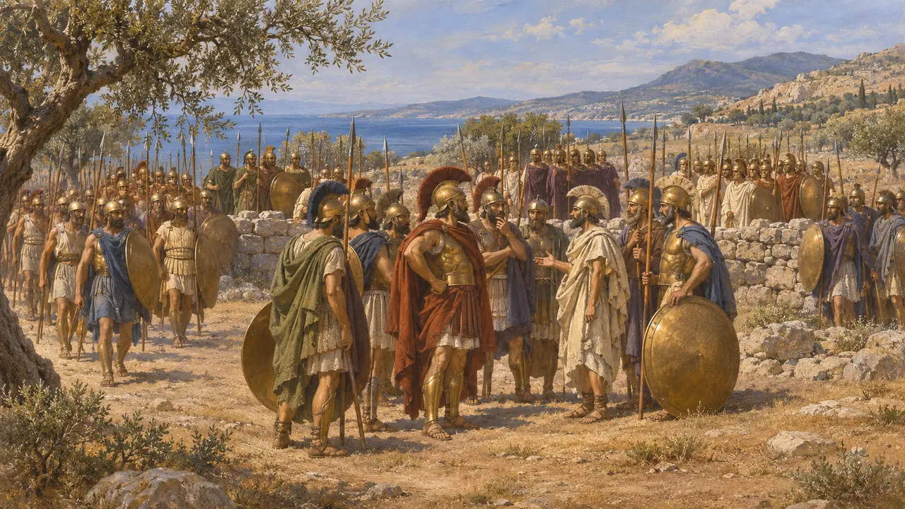
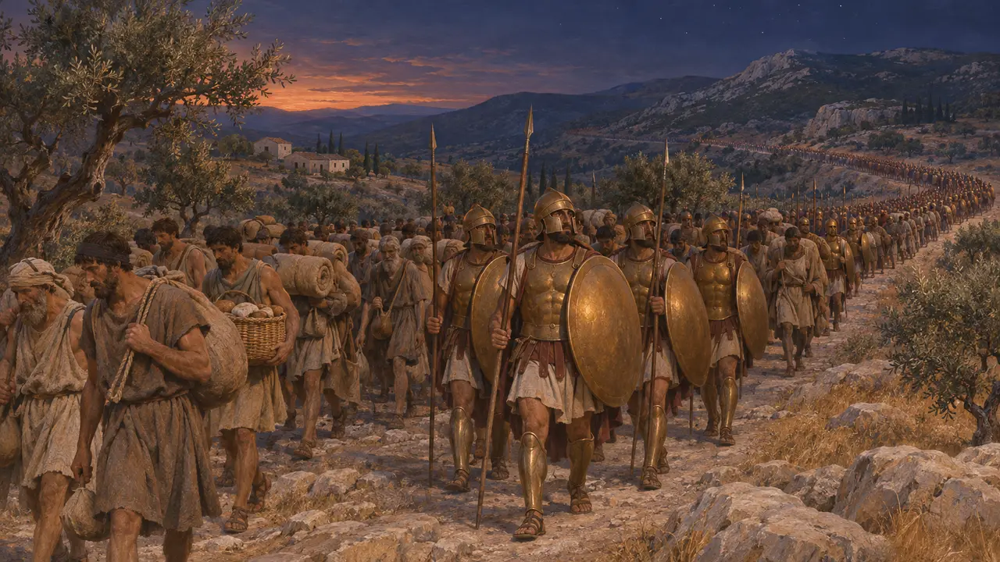

O Peloponeso
A grande península do sul da Grécia, liderada por Esparta, 480-479 a.C.
O Peloponeso é a grande península do sul da Grécia, ligada ao continente pelo istmo de Corinto. Esparta liderava a maioria de suas cidades numa liga, embora Argos se mantivesse à parte. Em 480 os peloponésios muraram o Istmo para barrar o Rei, e em 479 marcharam para o norte, até Plateias.
No jogo: O Peloponeso é citado nos textos das fases das Termópilas e de Plateias: os navios de grãos rumo a ele, os atenienses que fugiram para lá e os peloponésios em Mícale e Sesto.

O muro do Istmo
Relato antigoQuando os peloponésios souberam que Leônidas havia caído, diz Heródoto, reuniram-se no Istmo sob Cleômbroto, irmão de Leônidas, cortaram a estrada Cirônia e ergueram um muro de lado a lado, trabalhando dia e noite com pedras, tijolos, madeira e cestos de areia.
Herodotus 8.71

Salamina ou o Istmo
Relato antigoAntes de Salamina, os comandantes peloponésios queriam recuar e lutar junto ao Istmo, perto de sua terra. Temístocles defendeu o estreito de Salamina e, segundo Heródoto, mandou recado ao Rei para que os gregos tivessem de lutar ali.
Herodotus 8.49, 8.56-63, 8.74-75

Quem lutou e quem ficou de fora
Relato antigoHeródoto enumera os peloponésios no Istmo: espartanos, árcades, eleus, coríntios, siciônios, epidáurios, fliásios, trezênios e hermioneus. Os demais, Argos entre eles, ficaram parados, diz, e assim tomaram o lado do Rei.
Herodotus 8.72-73

Rumo ao norte, a Plateias
Relato antigoEm 479 os espartanos demoraram enquanto o muro era terminado, até que os atenienses ameaçaram fazer acordo com Mardônio. Então cinco mil espartanos, cada um com sete hilotas, partiram de noite, e os demais peloponésios os seguiram até Plateias.
Herodotus 9.6-11, 9.28-29
Fontes
- Herodotus 8.49-75, 9.6-11, 9.28-29